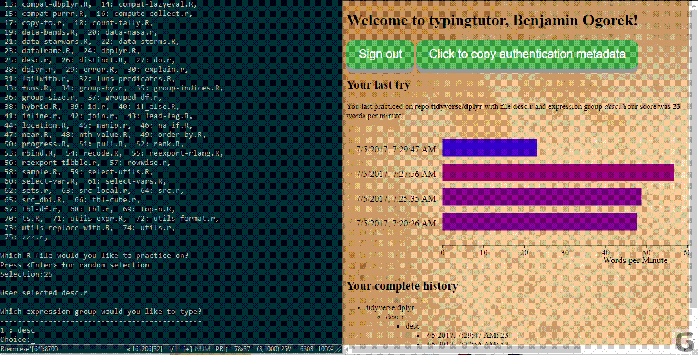
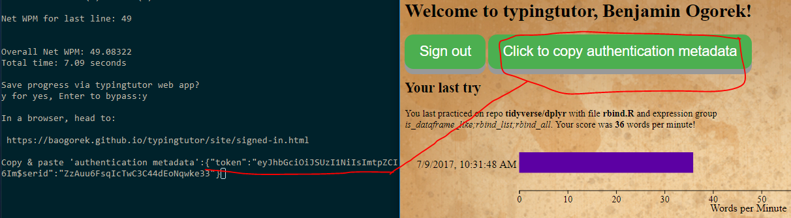

As typingtutor is only available on Github, the easiest way to install it is via devtools:
install.packages("devtools")
devtools::install_github("baogorek/typingtutor")
After starting R, load the typingtutor library:
library(typingtutor)
To practice typing on the Github repo tidyverse/dplyr, simply enter
type_github()
or, for another repo, enter the Github repository path as an argument:
type_github("stefvanbuuren/mice")
The user is presented with a choice of R files and then groups of R expressions within those files for which to type on. A maximum of 1000 characters will be presented to the user, and functions longer than 1000 characters are truncated.
You can always get to the
typingtutor companion website
by typing visit_site() in R or by visiting
https://baogorek.github.io/typingtutor/site/signed-in.html
which will redirect to
https://baogorek.github.io/typingtutor/
if the user is not signed in. Currently, a Github account is required for authentication to the typingtutor companion page.
After practicing on a typing tutor expression group, the user will be given the option to save to the typingtutor companion page. For the first time in every new R session, the user will have to enter a "authentication metadata string" at a prompt. Once signed into the typingtutor companion webpage, this is accomplished by clicking the green button, pressing CTRL + C and Enter, and pasting the resulting string back into the R prompt.

Saving is optional, and the user may use the typingtutor without ever saving to the typingtutor companion webpage.